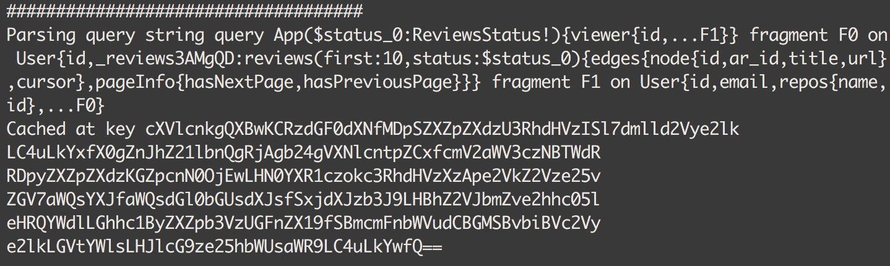

June 7, 2016
When a GraphQL query hits the server, what exactly happens first ? To start the execution, a GraphQL executor must first have a Query Document. Think of it as a query object containing all you need to exectute a query (Operation, Fields, Arguments, etc.).
Of course when we send a query to a GraphQL server, it’s a simple string, not a Document object. The first thing the server has to do is to lex and parse it.
With GraphQL-ruby at least, that step is the slowest one in the chain. Parsing, especially huge queries can be quite slow, and re-parsing the same query twice or more sounds like a huge waste!
What if we could cache the documents right after we’ve parsed the query, and then tell our Schema to take a parsed document instead of a string ?
I’ve worked on a very simple PR with the help of @rmosolgo a few weeks ago that allows us to do so, let’s take a look at how I implemented a basic caching mechanism for GraphQL queries in Rails.
Let’s take care of some configuration stuff first. I’m using rails 5, to enable cache in development we have to run this:
rails dev:cache
If you’re on Rails < 5, simply enable caching in your development.rb environment.
Now the fun stuff! In the GraphQLController we always want to check if we have a document cached for that particular query. If we do we’ll simply use it, if not we’ll parse it using GraphQL.parse(query_string)
Here’s how you could implement the caching:
def create
query_string = params[:query]
query_variables = params[:variables] || {}
document = get_document(query_string)
result = Schema.execute(
document: document,
variables: query_variables
)
render json:result
end
Notice that I never pass the query_string argument to Schema.execute. We always give it the full Document object using the document kwarg.
We get the document by calling get_document. It’s a method I’ve created to handle the caching. Let’s take a look at it:
def get_document(query_string)
cache_key = Base64.encode64(query_string)
document = Rails.cache.fetch(cache_key)
if document
logger.info "###############################"
logger.info "Got cached document #{document}"
logger.info "###############################"
else
logger.info "####################################"
logger.info "Parsing query string #{query_string}"
logger.info "Cached at key #{cache_key}"
logger.info "####################################"
document = GraphQL.parse(query_string)
Rails.cache.write(cache_key, document)
end
document
end
Few things to notice here. To make a slightly nicer key, I Base64 encode the query string before. The rest is pretty straight forward. If we find the document in the cache, we return it straight away. If not, we parse the string using GraphQL.parse and write it in the cache.
Keep in mind a nicer way to do what I have here is simply using Rails.cache.fetch with a block:
cache_key = Base64.encode64(query_string)
Rails.cache.fetch(cache_key) do
GraphQL.parse(query_string)
end
I wanted to have some logs while I tested so I chose the the longer way!
When a first query is sent to the server, as expected, we have to parse it:

As you can see, it took about 0.065 to parse, and execute the Query. Can we do much better with caching ? Let’s see. The next request is the exact same query, I simply hit refresh:
0.007. Much faster since we did not have to parse the query string this time. Imagine bigger queries!
And that’s it, we have a query cache for our GraphQL server, and it makes it much faster! I was using the memory_store cache in dev here, but nothing stops you from using other key value stores like memcached or redis!
As always, you can find me on Twitter @__xuorig__ or Github
Go back to Recent Posts ✍️
One of the coolest features of Relay is it’s amazing client side cache. When we mutate our data using Mutations, Relay needs to know how to update it’s client cache. The way the Relay team chose...